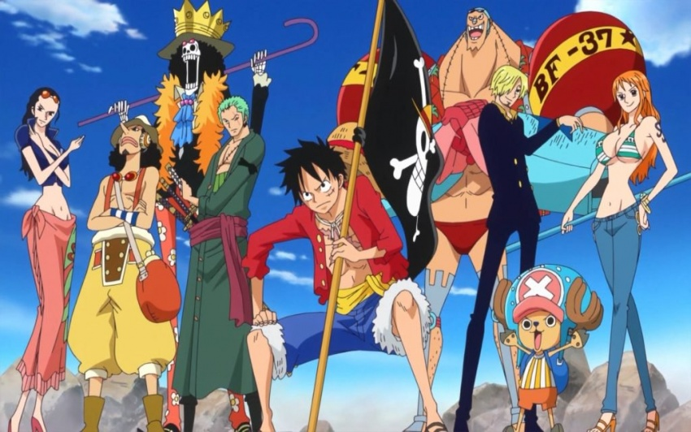
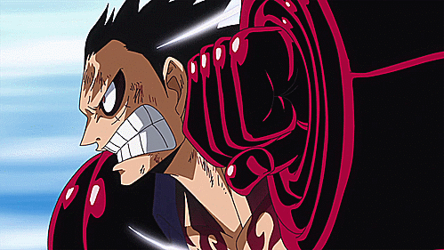
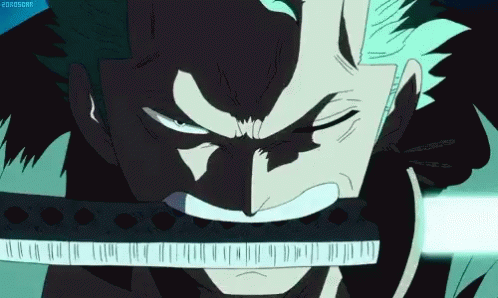

One Piece

One Piece (ワンピース, Wan Pīsu?) é uma série de mangá escrita e ilustrada por Eiichiro Oda. Os capítulos têm sido serializados na revista Weekly Shōnen Jump desde 19 de julho de 1997, com os capítulos compilados e publicados em volumes tankōbon pela editora Shueisha. One Piece conta as aventuras de Monkey D. Luffy, um jovem cujo corpo ganhou as propriedades de borracha após ter comido uma Fruta do Demônio acidentalmente. Com sua tripulação, os Piratas do Chapéu de Palha, Luffy explora a Grand Line em busca do tesouro mais procurado do mundo, o One Piece, a fim de se tornar o próximo Rei dos Piratas.

O mangá foi adaptado em um episódio OVA produzido pela Production I.G em 1998, e num anime produzido pela Toei Animation, transmitido no Japão desde 1999. Além disso, a Toei Animation produziu treze filmes de anime, um OVA e onze episódios especiais de televisão. Foram lançadas também vários tipos de mídias desenvolvidas por diversas empresas relacionadas à série, como um jogo de cartas colecionável, e vários jogos eletrônicos. A série de mangá é licenciada e publicada no Brasil pela editora Panini Comics. A série de anime já foi exibida em sinal aberto no Brasil e em televisão a cabo, e em Portugal apenas em televisão a cabo. Atualmente a série é transmitida simultaneamente pela Crunchyroll no Brasil.

SINOPSE:
A série centra-se em Monkey D. Luffy, um jovem que, inspirado por seu ídolo de infância e poderoso pirata "Red Haired " Shanks, sai em uma jornada do mar do leste azul para encontrar o famoso tesouro One Piece e proclamar-se o rei dos piratas. Em um esforço para organizar sua própria tripulação, o chapéu de palha piratas (麦わら海賊団篇 Mugiwara Kaizoku-danhen), Luffy ressalva e faz amizade com um espadachim chamado Roronoa Zoro, e eles cabeça fora em busca de uma peça. Eles estão Unidos em sua jornada por Nami, um navegador e ladrão; Usopp, um sniper e um mentiroso; e Sanji, um chef mulherengo. Eles adquirem um navio chamado "Going Merry" e se envolvem em confrontos com famosos piratas do leste azul. Como Luffy e sua tripulação estabelecidos em suas aventuras, outros se juntam à tripulação mais tarde na série, incluindo Tony Tony Chopper, um médico e uma rena antropomorfizado; Nico Robin, uma arqueóloga e antiga assassina; Franky, um ciborgue contrutor.; Brook, um músico esquelético e espadachim; e Jinbe, um Helmsman Fishman; e eles também adquirem um novo navio chamado Thousand Sunny.

Enredo
Monkey D.Luffy é um jovem que, inspirado em sua infância por um ídolo pirata chamado Shanks, o Ruivo, sai do East blue em direção a Grand Line a fim de encontrar o One Piece, o tesouro deixado por Gol D. Roger o Rei dos Piratas e, assim, proclamar-se como o novo Rei dos Piratas. Em um esforço para organizar sua própria tripulação, o Pirata do Chapéu de Palha (麦わら海賊団篇, Mugiwara Kaizoku-dan?), sai em um viagem pelo East Blue em busca de companheiros. Nessa jornada, ele encontra Koby, um faz-tudo que virou escravo de uma pirata chamada Alvida da Clava de Ferro. Após derrotar Alvida, Luffy e Koby se dirigem a uma base da Marinha( a instituição mundial governamental que é responsável pela aplicação da lei e da ordem no Mar) a fim de resgatar um espadachim chamado Roronoa Zoro, o Caça-Piratas. Zoro acaba aceitando entrar no bando do Luffy após esses derrotarem o capitão responsável pela base da Marinha, Morgan da Mão de Machado, tendo Zoro uma ambição de se tornar o maior espadachim do mundo. Ambição essa motivada pela morte de sua querida amiga e rival Kuina.

|
|